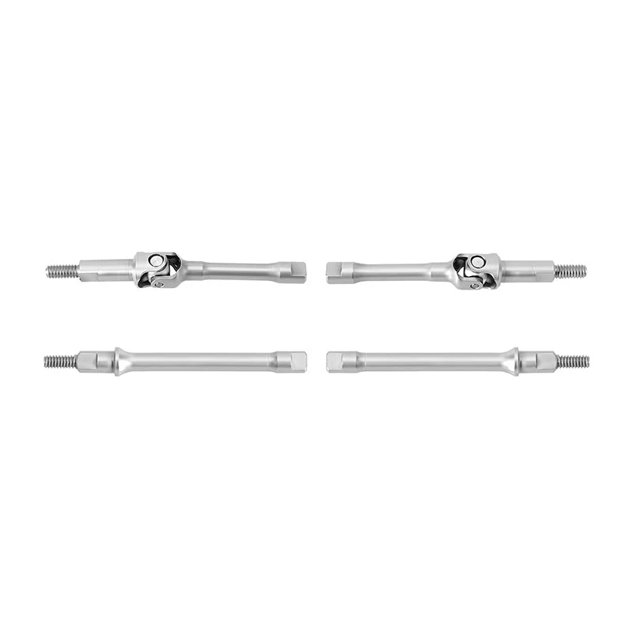

SCX30 舵機與動力升級：有刷、無刷怎麼選
原廠動力低速細膩但戶外偏慢。整理車友升級經驗：先換舵機還是馬達、有刷 65T/60T 直插即用、無刷要另備遙控器，以及動力變大後傳動軸要一起升級。
SCX30 原廠電裝的低速控制其實很細膩，室內攀爬或桌上地形很夠用。但到戶外，車友最常抱怨的就是慢，在短草地上也會吃力。至於什麼時候該升級、升級哪裡，這篇一次整理。
先改舵機，還是先改馬達？
如果你已經加了配重、換了大胎，先改舵機。重量變大、輪胎變大之後，原廠舵機轉不動、回正無力是最常見的症狀。
 N30 PRO 高扭力舵機（鋁殼）INJORA｜SCX30｜電裝系統/舵機NT$ 1,230看商品
N30 PRO 高扭力舵機（鋁殼）INJORA｜SCX30｜電裝系統/舵機NT$ 1,230看商品
如果車子還算輕，只是覺得速度慢、上坡沒力，可以先改馬達。
有刷馬達：最簡單的升級
原廠是 88T 有刷馬達。換成圈數較少的 030 規格有刷馬達，原廠電變直接插上就能用，不用換遙控器：
- 65T：速度和扭力提升有感，低速仍好控制，大多數人的首選
- 60T：更快，適合戶外跑比較多的人
 030 有刷馬達 65TINJORA｜SCX30｜電裝系統/舵機NT$ 230看商品
030 有刷馬達 65TINJORA｜SCX30｜電裝系統/舵機NT$ 230看商品
 030 有刷馬達 60TINJORA｜SCX30｜電裝系統/舵機NT$ 230看商品
030 有刷馬達 60TINJORA｜SCX30｜電裝系統/舵機NT$ 230看商品
海外車友也有人改用 050 規格的高品質有刷馬達，回報的心得是極速和原廠差不多，但低速順很多。換馬達時要把齒輪拔下來裝到新馬達上，建議用專用的拔齒器，不要用螺絲起子硬撬，以免傷到馬達內部。
無刷：效能最好，但要注意相容
無刷電變配無刷馬達的低速順暢度和扭力都是最好的，適合重配重的攀爬車。但要特別注意：
- 原廠遙控器不相容，需要另外準備有 CH2 的遙控器和接收機
- 馬達較長的版本扭力更足，適合攀爬取向
 MBL32 無刷電變＋1621 4300KV 馬達組INJORA｜SCX30｜電裝系統/舵機NT$ 1,960看商品
MBL32 無刷電變＋1621 4300KV 馬達組INJORA｜SCX30｜電裝系統/舵機NT$ 1,960看商品
想保留有刷馬達、但要更好的拖曳煞車（下坡不溜車），可以只換有刷電變：
 MB100 NANO 有刷電變 15AINJORA｜SCX30｜電裝系統/舵機NT$ 630看商品
MB100 NANO 有刷電變 15AINJORA｜SCX30｜電裝系統/舵機NT$ 630看商品
動力變大之後：傳動系統要跟上
馬力變大、配重變重之後，原廠塑膠傳動軸和半軸會變成弱點。車友的經驗是：換動力的同時，順便把傳動軸換成不鏽鋼的，免得在野外斷掉。
 Bronco／JLU／K10 不鏽鋼傳動軸INJORA｜SCX30｜傳動系統NT$ 480看商品
Bronco／JLU／K10 不鏽鋼傳動軸INJORA｜SCX30｜傳動系統NT$ 480看商品

不鏽鋼前後半軸組INJORA｜SCX30｜車橋相關配件NT$ 410看商品Tacoma 和 CJ-7 傳動軸長度不同，請選 Tacoma 用 或 CJ-7 用。
本文整理自 Hooniverse SCX30 評測、RCTalk 論壇討論串與車友升級分享，實際效果依車況與玩法而異。
到山稜RC選物看更多零件